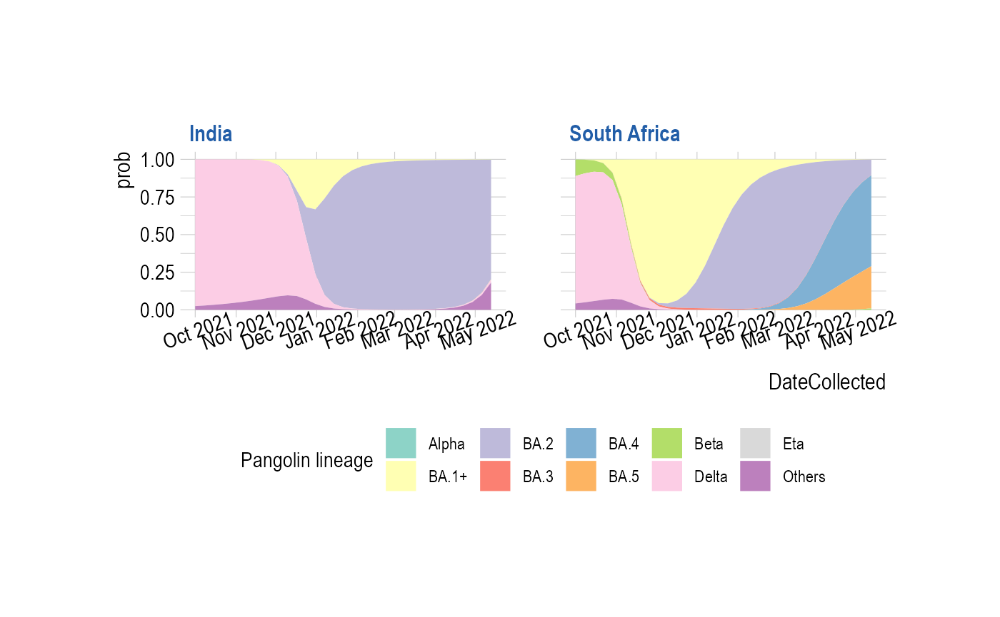
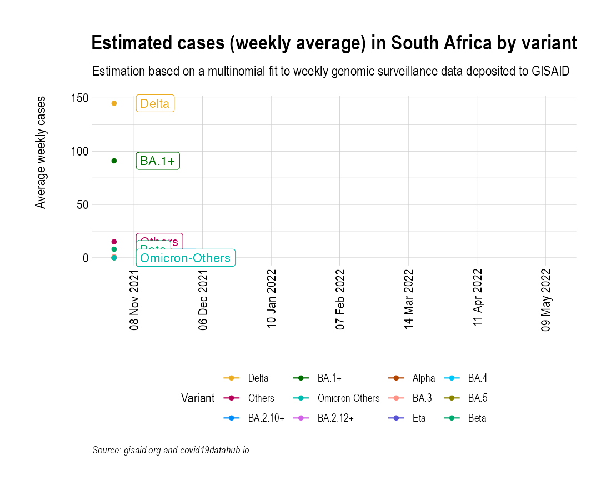

Compare growth in India and South Africa
Source:vignettes/SouthAfrica_contrast_India.Rmd
SouthAfrica_contrast_India.Rmd
suppressPackageStartupMessages({
library(covmuller)
library(tidyverse)
library(magick)
})
theme_set(CovmullerTheme())Get data
current_date <- "2022_06_25"
fpath.tar <- paste0("~/github/2021_Covid19_surveillance/data/all_metadata/metadata_tsv_", current_date, ".tar.xz")
fpath.qs <- paste0("~/github/2021_Covid19_surveillance/data/all_metadata/metadata_tsv_", current_date, ".qs")
gisaid_metadata <- qs::qread(file = fpath.qs)
gisaid_metadata <- FormatGISAIDMetadata(gisaid_metadata) %>% filter(pangolin_lineage != "Unassigned")
vocs <- GetVOCs()
omicron <- vocs[["omicron"]]
vocs[["omicron"]] <- NULL
vocs[["omicron-others"]] <- omicron
custom_voc_mapping <- list(
`BA\\.1` = "BA.1+",
`BA\\.1\\.*` = "BA.1+",
`BA\\.2\\.10` = "BA.2.10+",
`BA\\.2\\.10\\.*` = "BA.2.10+",
`BA\\.2\\.12` = "BA.2.12+",
`BA\\.2\\.12\\.*` = "BA.2.12+",
`BA\\.2` = "BA.2",
`BA\\.3` = "BA.3",
`BA\\.4` = "BA.4",
`BA\\.5` = "BA.5"
)
month_prevalence <- CollapseLineageToVOCs(
variant_df = gisaid_metadata,
vocs = vocs,
custom_voc_mapping = custom_voc_mapping, summarize = FALSE
)
confirmed_subset_dateweekwise_long <- GetIndiaConfirmedCasesWeeklyLong()
confirmed_subset_dateweekwise_long_india <- confirmed_subset_dateweekwise_long %>%
filter(State == "India") %>%
rename(n = value) %>%
rename(WeekYearCollected = WeekYear) %>%
dplyr::select(-contains("type"))
confirmed_subset_dateweekwise_long_india$State <- NULL
confirmed.tmp <- COVID19::covid19(country = "South Africa", verbose = FALSE, level = 2) %>%
select(date, administrative_area_level_2, confirmed) %>%
rename(State = administrative_area_level_2)
confirmed <- COVID19::covid19(country = "South Africa", verbose = FALSE) %>%
select(date, confirmed) %>%
filter(!is.na(confirmed))
confirmed$daily_cases <- c(confirmed$confirmed[1], diff(confirmed$confirmed))
confirmed$WeekYear <- tsibble::yearweek(confirmed$date)
confirmed_subset_dateweekwise_long_southafrica <- confirmed %>%
group_by(WeekYear) %>%
summarise(n = ceiling(mean(daily_cases, na.rm=T))) %>%
arrange(WeekYear) %>%
rename(WeekYearCollected = WeekYear)
gisaid_metadata_2022 <- gisaid_metadata %>%
filter(MonthYearCollected >= "Oct 2021") %>%
filter(pangolin_lineage != "") %>%
filter(Country %in% c("South Africa", "India"))
gisaid_southafrica <- gisaid_metadata_2022 %>% filter(Country == "South Africa")
gisaid_southafrica$State <- "South Africa"
gisaid_southafrica$Country <- "X"
gisaid_india <- gisaid_metadata_2022 %>% filter(Country == "India")
gisaid_india$State <- "India"
gisaid_india$Country <- "X"
gisaid_sel <- rbind(gisaid_southafrica, gisaid_india) %>% arrange(State, MonthYearCollected)
gisaid_sel_collapsed <- CollapseLineageToVOCs(
variant_df = gisaid_sel,
vocs = vocs,
custom_voc_mapping = custom_voc_mapping,
summarize = FALSE
)
gisaid_southafrica_collapsed <- CollapseLineageToVOCs(
variant_df = gisaid_southafrica,
vocs = vocs,
custom_voc_mapping = custom_voc_mapping,
summarize = FALSE
)
gisaid_india_collapsed <- CollapseLineageToVOCs(
variant_df = gisaid_india,
vocs = vocs,
custom_voc_mapping = custom_voc_mapping,
summarize = FALSE
)
gisaid_sel_dateweek <- SummarizeVariantsDatewise(gisaid_sel_collapsed, by_state = TRUE)
fit <- FitMultinomStatewiseDaily(gisaid_sel_dateweek)## # weights: 50 (36 variable)
## initial value 238849.454281
## iter 10 value 77023.591749
## iter 20 value 72602.520585
## iter 30 value 62856.104902
## iter 40 value 53593.548614
## iter 50 value 53082.185527
## iter 60 value 52972.890451
## iter 70 value 52921.201737
## iter 80 value 52908.922263
## iter 90 value 52904.261762
## iter 100 value 52890.432044
## iter 110 value 52882.320916
## iter 120 value 52881.989498
## final value 52881.950787
## converged
head(fit)## lineage_collapsed DateCollectedNumeric State prob SE df
## 1 Alpha 18901 India 1.055655e-04 1.046090e-04 NA
## 2 BA.1+ 18901 India 2.007964e-06 3.237835e-07 NA
## 3 BA.2 18901 India 1.239442e-10 2.408556e-11 NA
## 4 BA.3 18901 India 6.591168e-09 4.030686e-09 NA
## 5 BA.4 18901 India 3.494407e-30 1.210756e-29 NA
## 6 BA.5 18901 India 8.999347e-32 5.031133e-31 NA
## asymp.LCL asymp.UCL DateCollected
## 1 -9.946425e-05 3.105953e-04 2021-10-01
## 2 1.373360e-06 2.642568e-06 2021-10-01
## 3 7.673734e-11 1.711510e-10 2021-10-01
## 4 -1.308831e-09 1.449117e-08 2021-10-01
## 5 -2.023598e-29 2.722479e-29 2021-10-01
## 6 -8.960904e-31 1.076077e-30 2021-10-01
muller <- PlotMullerDailyPrevalence(fit)
muller
gisaid_southafrica <- gisaid_metadata_2022 %>% filter(Country == "South Africa")
gisaid_india <- gisaid_metadata_2022 %>% filter(Country == "India")
gisaid_southafrica_collapsed <- CollapseLineageToVOCs(
variant_df = gisaid_southafrica,
vocs = vocs,
custom_voc_mapping = custom_voc_mapping,
summarize = FALSE
)
gisaid_india_collapsed <- CollapseLineageToVOCs(
variant_df = gisaid_india,
vocs = vocs,
custom_voc_mapping = custom_voc_mapping,
summarize = FALSE
)
collapsed_unique_variants <- union(unique(gisaid_india_collapsed$lineage_collapsed), unique(gisaid_southafrica_collapsed$lineage_collapsed))
colors_to_use <- c("#ebac23","#b80058","#008cf9","#006e00","#00bbad","#d163e6","#b24502","#ff9287","#5954d6","#00c6f8","#878500","#00a76c")
names(colors_to_use) <- collapsed_unique_variants
gisaid_southafrica_weekwise <- SummarizeVariantsWeekwise(gisaid_southafrica_collapsed)
gisaid_india_weekwise <- SummarizeVariantsWeekwise(gisaid_india_collapsed)
cases_southafrica <- confirmed_subset_dateweekwise_long_southafrica %>% filter(WeekYearCollected >= tsibble::yearweek("2021 W44"))
cases_india <- confirmed_subset_dateweekwise_long_india %>% filter(WeekYearCollected >= tsibble::yearweek("2021 W44"))
preds_southafrica <- FitMultinomWeekly(gisaid_southafrica_weekwise, cases_southafrica)## # weights: 36 (24 variable)
## initial value 37961.449023
## iter 10 value 13558.813912
## iter 20 value 11065.013373
## iter 30 value 10685.405263
## iter 40 value 10599.430785
## iter 50 value 10572.875311
## iter 60 value 10569.431636
## iter 70 value 10554.274571
## iter 80 value 10551.115742
## iter 90 value 10550.507623
## final value 10550.336525
## converged
preds_india <- FitMultinomWeekly(gisaid_india_weekwise, cases_india)## # weights: 36 (24 variable)
## initial value 189958.853609
## iter 10 value 52753.931558
## iter 20 value 46779.813867
## iter 30 value 42577.829323
## iter 40 value 42495.312090
## iter 50 value 42467.475146
## iter 60 value 42460.445782
## iter 70 value 42449.730839
## iter 80 value 42445.777589
## iter 90 value 42436.436182
## final value 42430.839818
## converged
sa_anim <- PlotVariantPrevalenceAnimated(preds_southafrica, title = "Estimated cases (weekly average) in South Africa by variant", caption = "**Source: gisaid.org and covid19datahub.io<br>**", colors = colors_to_use)
gganimate::anim_save(filename = here::here("docs/articles/SA_animated_compare.gif"), animation = sa_anim)
india_anim <- PlotVariantPrevalenceAnimated(preds_india, title = "Estimated cases (weekly average) in India by variant", caption = "**Source: gisaid.org and covid19bharat.org<br>**", colors = colors_to_use)
gganimate::anim_save(filename = here::here("docs/articles/IN_animated_compare.gif"), animation = india_anim)
india_mgif <- magick::image_read(india_anim)
southafrica_mgif <- magick::image_read(sa_anim)
final_gif <- image_append(c(india_mgif[1], southafrica_mgif[1]))
for (i in 2:length(india_mgif)) {
combined <- image_append(c(india_mgif[i], southafrica_mgif[i]))
final_gif <- c(final_gif, combined)
}
gganimate::anim_save(filename = here::here("docs/articles/SA_IN_animated.gif"), animation = final_gif)
